What if reading were a starting point for connection?
I wanted a place where students could exchange ideas beyond coursework and have conversations with enough time and trust to go deeper.
How the idea took shape
Start small
Reading salons created a manageable setting for students to share interpretations and questions.
Keep showing up
An online shared-reading programme continued for around 20 weeks.
Let ideas travel
Reading became an entry point to wider conversations about society, personal growth and public life.
My contribution
I founded the community and coordinated its development with the core team, helping turn informal interest into a recurring programme.
Continuity can matter as much as scale: a recurring invitation gives people more than one chance to take part.
Inside the initiative

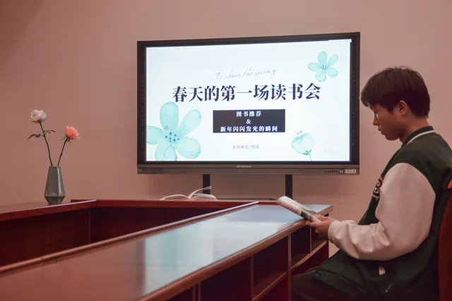

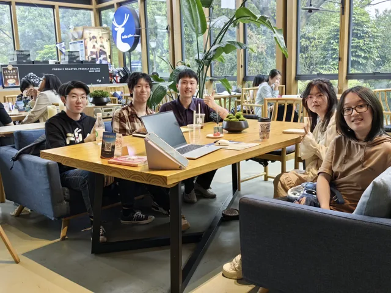

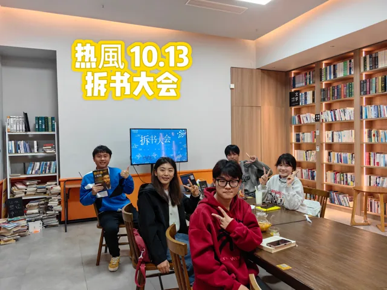

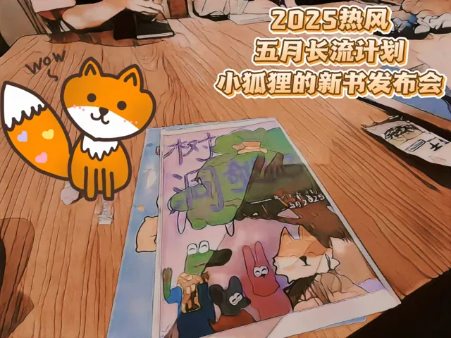

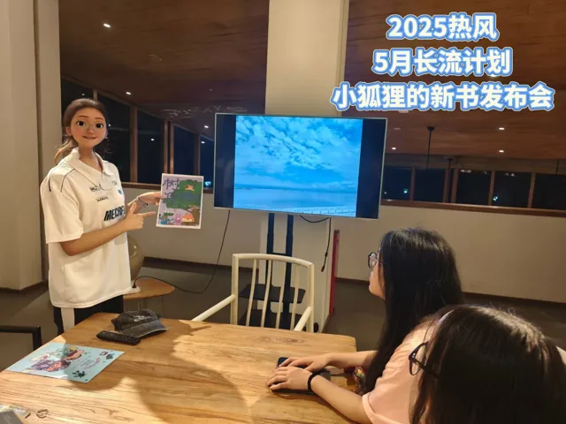

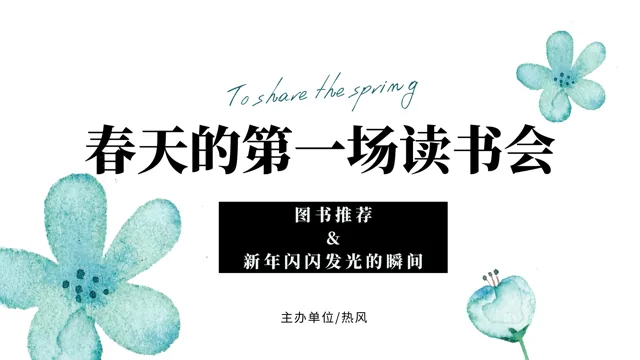

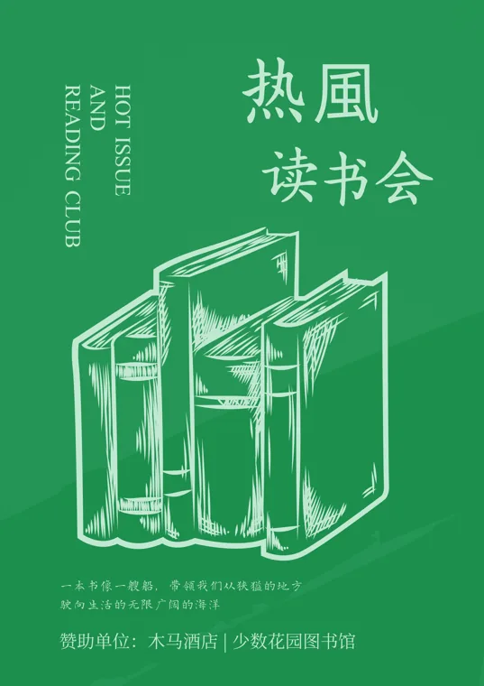

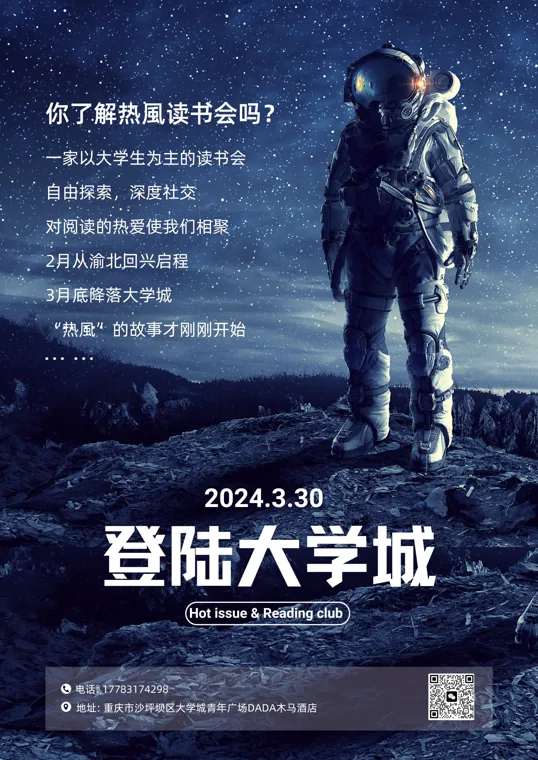

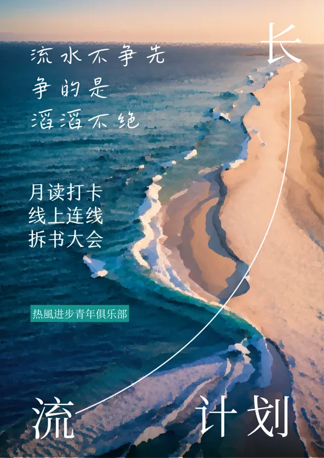

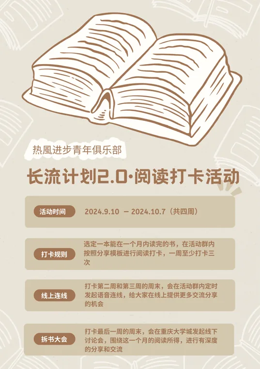

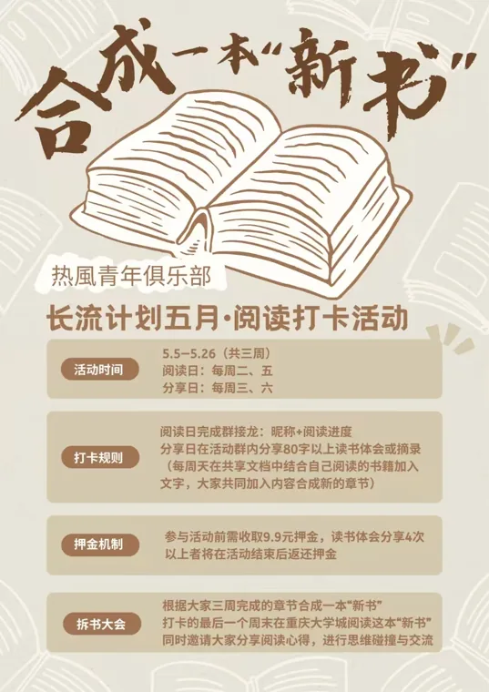

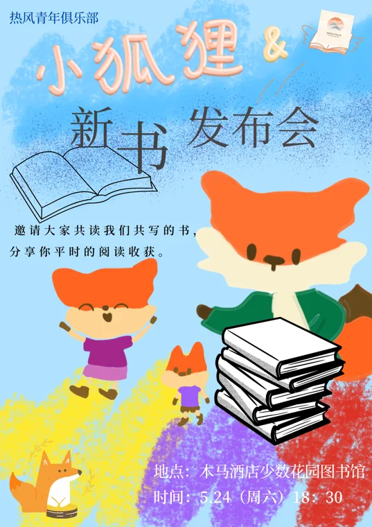